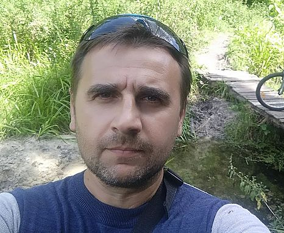

Електрика та магнетизм
Лекції, нормативна дисципліна.
Classroom ↗// привіт, я
▍
Кандидат фізико-математичних наук, доцент кафедри прикладної фізики КПІ ім. Ігоря Сікорського. Моделюю фізичні системи, рахую молекули, пишу відкриті підручники та інструменти для науки.
↳ рухай курсор: лінії поля заряду «+» тягнуться до курсора «−»

Python LaTeX DFT / ORCAЯ фізик за освітою й програміст за звичкою. Закінчив Миколаївський національний педагогічний університет за спеціальністю «Фізика» (2001), захистив кандидатську з фізики полімерів в Інституті хімії високомолекулярних сполук НАН України (2005). Від 2014 року працюю доцентом кафедри прикладної фізики НН ФТІ КПІ.
Використовую Python для наукових обчислень, аналізу даних, автоматизації та моделювання. Те, що колись було скриптом «для себе», зазвичай виростає в бібліотеку, плагін або повноцінний підручник — і лягає у відкритий репозиторій.
Окрім науки й викладання — адмініструю сайти та Google Workspace факультету, веду протоколи кафедри, відповідаю за міжнародні питання НН ФТІ.
 Python
Python NumPy
NumPy SciPy
SciPy Matplotlib
Matplotlib Jupyter
Jupyter LaTeX◇TikZ⚛ORCA
LaTeX◇TikZ⚛ORCA
 FastAPI
FastAPI SQLAlchemy
SQLAlchemy PostgreSQL
PostgreSQL SQLite
SQLite MongoDB
MongoDB Docker
Docker
 Git
Git GitHub Actions
GitHub Actions VS Code
VS Code Lua
Lua PowerShell
PowerShell Linux / WSL
Linux / WSL Node.js
Node.js
Курси, які я читаю в КПІ. Матеріали — у Google Classroom і відкритих підручниках.
Лекції, нормативна дисципліна.
Classroom ↗Лекції та практичні.
Classroom ↗Лекції та практичні.
Classroom ↗Лекції та практичні.
Конспект ↗Лекції та практичні, вибіркова.
Classroom ↗Лекції та практичні, вибіркова.
Конспект ↗Верстаю у LaTeX, збираю в CI, публікую на GitHub Pages — читати можна просто в браузері.
Тема для VS Code з низькою втомою очей для Python, LaTeX і наукових сесій. Опублікована у Marketplace.
Підтримка української мови в Babel для pdfTeX, XeTeX і LuaTeX — пакет у CTAN.
Рендер Markdown у редакторі, відкриття HTML у браузері, текстовий шар PDF/DjVu прямо у вкладці.
Застосунок для обміну знімками на FastAPI з автентифікацією та БД.
Генератор сторінок дисциплін для WordPress та скрипти пакетного завантаження дисертацій до репозиторію ela.kpi.ua (DSpace 7).
Асистент, що пояснює текст наукових статей. Розгорнутий як веб-сервіс із документацією API.
Командний асистент для адміністративних задач із SQLite; технічний опис у PDF.
ASCII-дерево каталогів із YAML-конфігурацій і пакетний OCR формул у LaTeX.
Живий список із GitHub API: …